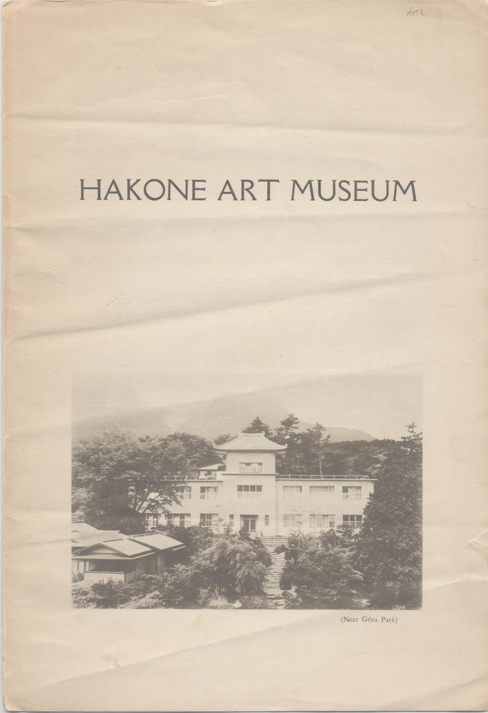

――― 岡 田 自 観 師 の 論 文 集 ――発行誌別
HAKONE ART MUSEUM

昭和27年6月30日、7月1日の箱根美術館一般公開前に、各界名士と外国新聞記者を招待された際の原稿「美術館建設の意義」を元に作成されたチラシ「美術館建設の趣旨」の英訳ようである。 表紙に箱根美術館の全景、３ページ目に肉筆浮世絵「湯女」の写真が紹介されている。 当時としてはかなり上質の紙を使用し、表紙タイトルの字体もかなり凝ったものが使われている。